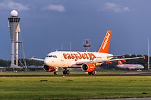

La aviación civil es una de las dos categorías principales de vuelo, que representa toda la aviación no militar , tanto privada como comercial. La mayoría de los países del mundo son miembros de la Organización de Aviación Civil Internacional (OACI) y trabajan juntos para establecer estándares comunes y prácticas recomendadas para la aviación civil a través de esa agencia.
Aunque el transporte aéreo regular es la operación más grande en términos de número de pasajeros, GA es mayor en el número de vuelos (y horas de vuelo, en los EE . UU.) En los EE. UU., GA transporta 166 millones de pasajeros cada año , más que cualquier aerolínea individual, aunque menos que todas las aerolíneas combinadas. Desde 2004, las aerolíneas de EE. UU. Combinadas han transportado más de 600 millones de pasajeros cada año, y en 2014, transportaron un total combinado de 662,819,232 pasajeros.